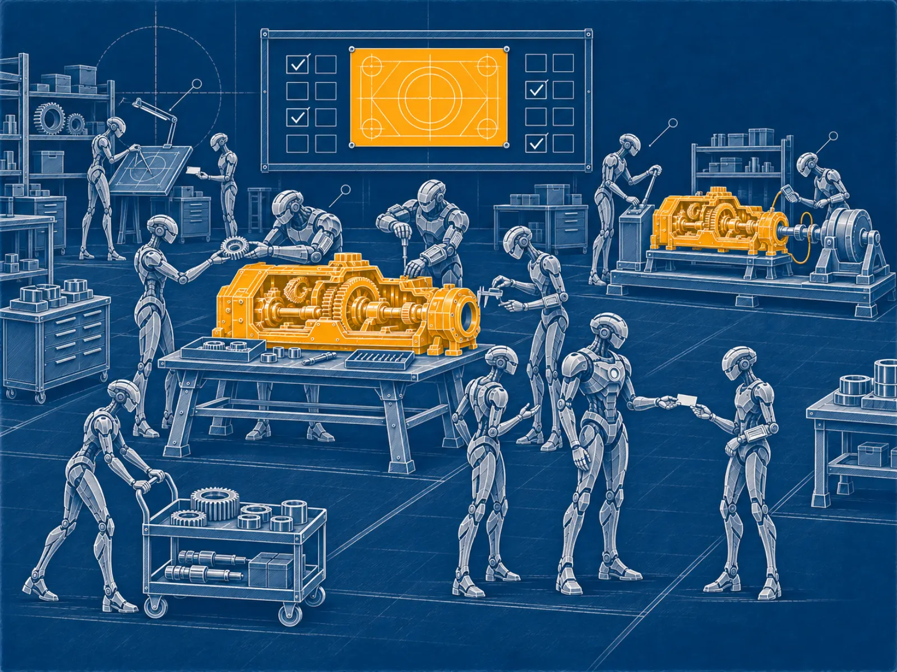
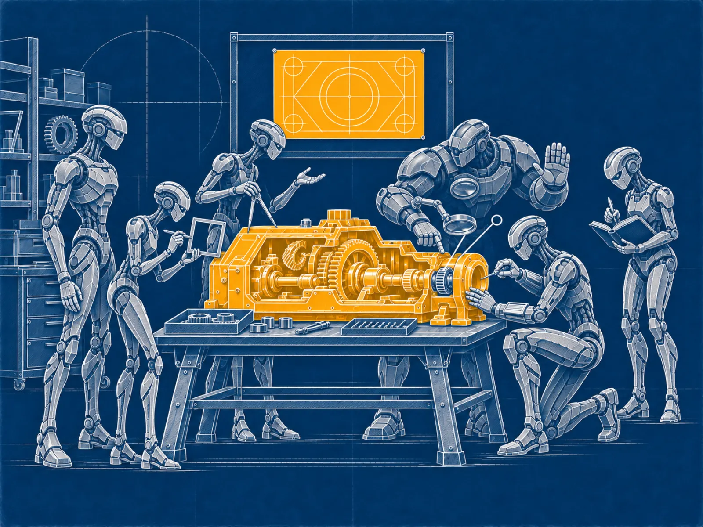
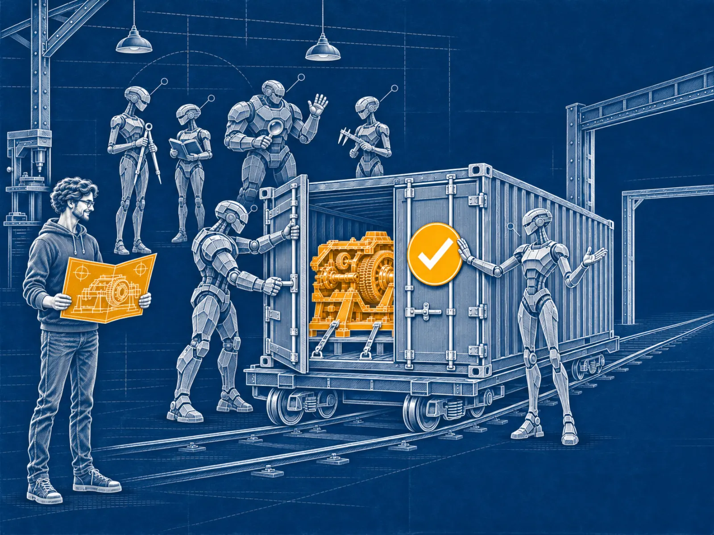
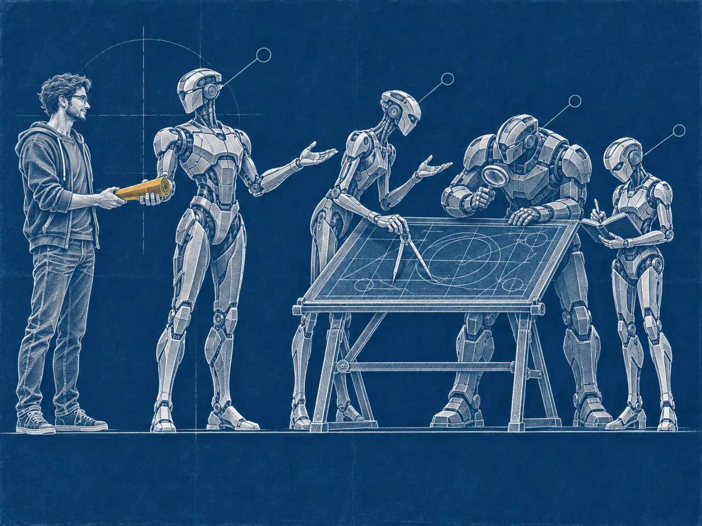
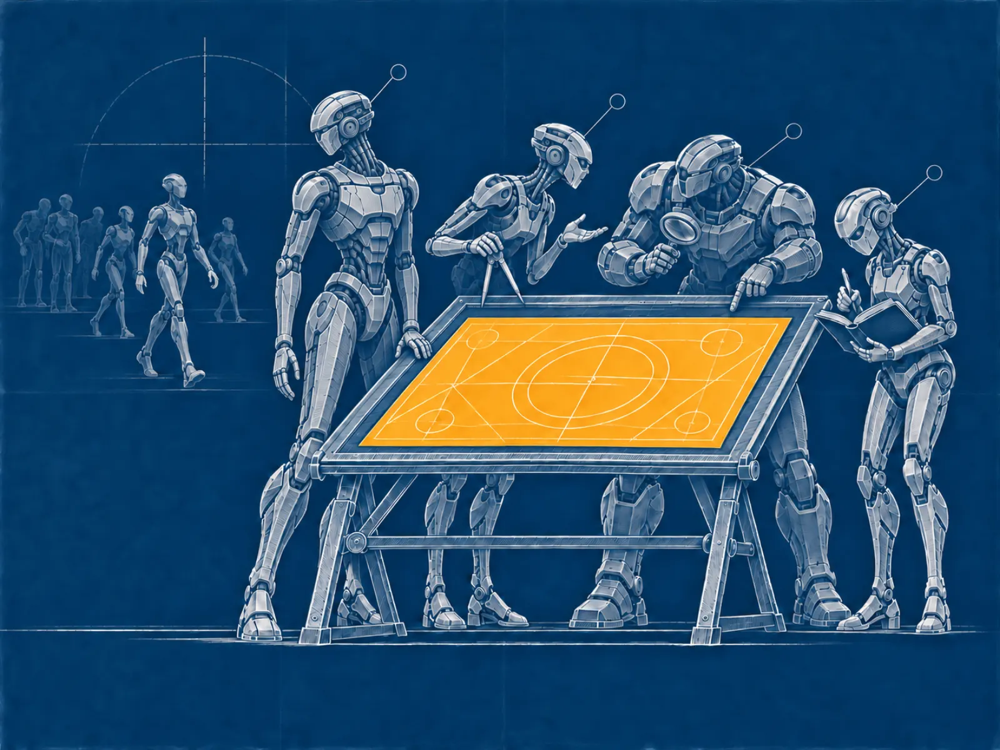
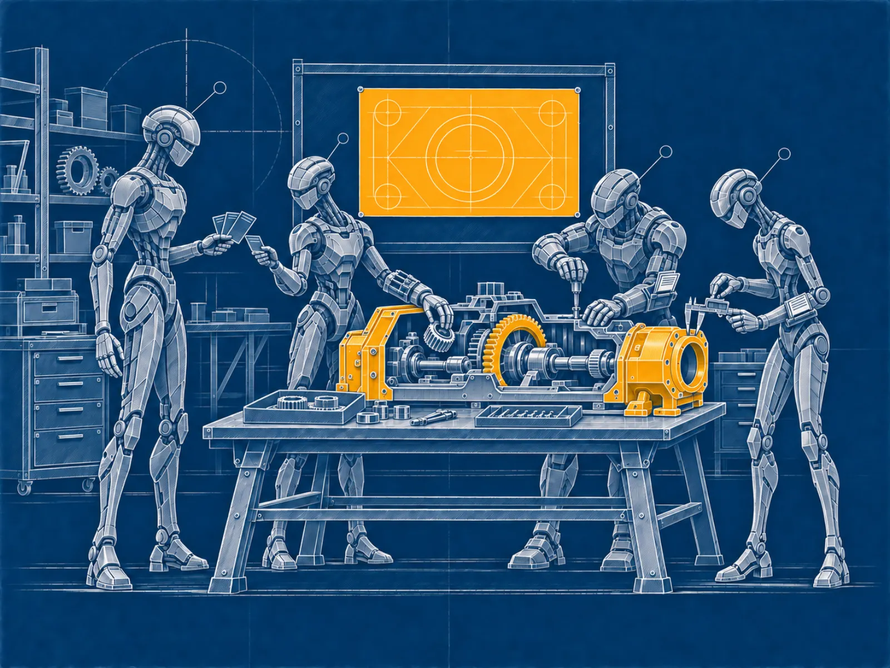
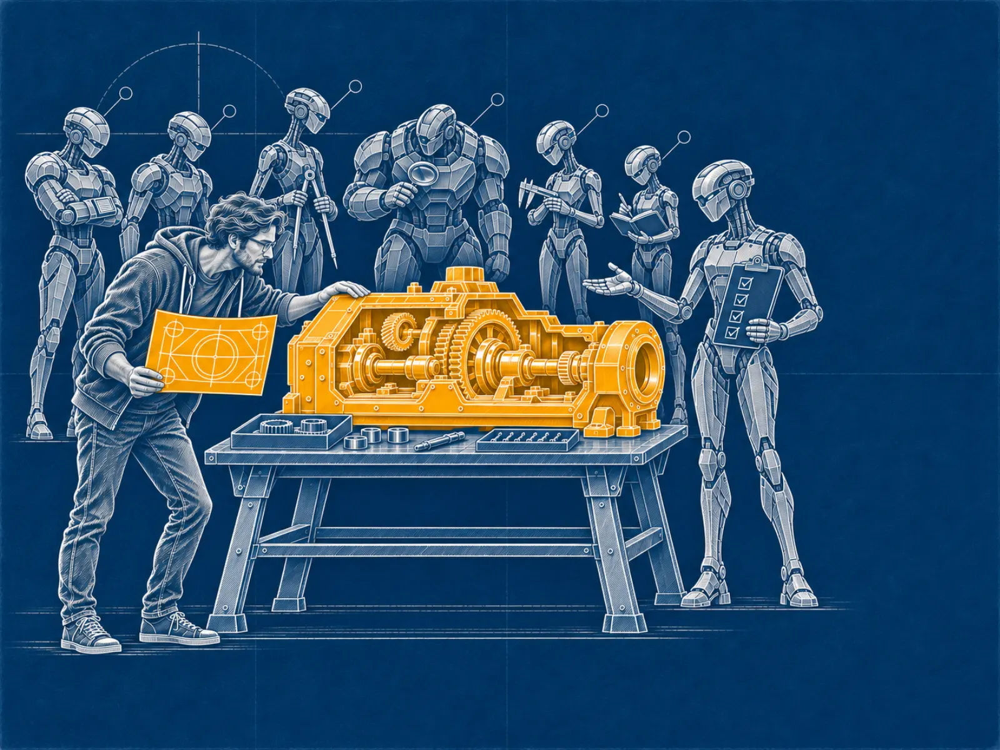

Everyone can build a software factory. The best one will be built together.Open Software Factory, the open-source AI software team for Claude Code
Your spec goes in, a tested, reviewed release comes out.
claude plugin marketplace add achisolomon/open-software-factory && claude plugin install software-factory@software-factory-marketplace --scope user
team lead, fix the typo in the log message
team lead, build docs/spec.md
A whole team, and you keep the keys

A full AI team in your editor

Quality you can check

You stay in control
Sensible model costs
Follow one spec through the factory
-

Step 1 of 7You hand over the spec
- You hand over the spec.
- Takes it as it is. Calls the team.
- Reads it for the design.
- Looks for risks first.
- Starts the cost estimate.
-

Step 2 of 7The Team Lead picks the team
- Triage: type, size, reviewers.
- A design and small tasks.
- Threat model.
- Cost guardrails.
- Called only when needed.
-

Step 3 of 7Developers build. Testers try to break it.
- Hands out the tasks.
- Builds one task, with tests.
- Builds the next, side by side.
- Verifies each task.
-
Step 4 of 7
Every task is reviewed
- Checks code against the design.
- Usability and accessibility.
- Reviews anything paid.
- Finds a fault and stops the line.
- Fixes it. Three rounds at most.
-
Step 5 of 7
The whole floor works at once
- Reviews finished tasks.
- Tasks run in parallel.
- Load tests the build.
- Keeps the status board.
-

Step 6 of 7You review
- Presents the result. Waits.
- You compare it with your spec.
- Stands by until you answer.
-
- You say yes.
- Seals the release, after your yes.
- Ships it.
Read the 7 steps as text
- You hand over a spec, written with the spec tool you like. The Product Manager checks it for gaps and never rewrites it.
- The Team Lead classifies every request first: its type, its size and the reviewers it needs. Small work takes the fast path.
- The Architect splits the design into small tasks. A Developer builds one task at a time, with unit tests, and the Test Engineer hunts for where it breaks.
- Every task is reviewed. The Architect checks the code; Security, FinOps and UX can join. A finding goes back to the Developer, for at most three fix rounds.
- Independent tasks can run side by side when you choose speed. The Team Lead posts a status board: who is running, blocked, done, and what is next.
- The Team Lead stops at three gates: the requirements, the design with its cost, and the release. Nothing moves on until you approve.
- No push, merge, deploy, paid resource or data deletion happens without your explicit approval. The Team Lead holds the release until you say yes.
- You
- You write the spec and you approve. Nothing irreversible happens without your yes.
- Spec
- Your spec, in amber. The factory never rewrites it. Follow it through every picture.
- Team Lead
- Runs the process, delegates the work, enforces the gates and talks to you.
- Architect
- Designs the system, splits it into tasks and reviews the code.
- Security
- Threat model, security reviews and the final release gate.
- FinOps
- Estimates the cost before it is built and reviews changes that add paid resources.
- Developer
- Implements one task at a time, with unit tests, on a local branch.
- Tester
- The devil's advocate. Verifies each task and hunts for where it breaks.
- UX/UI
- User flows, screen specs, and usability and accessibility reviews.
- DevOps
- Environments, CI/CD and infrastructure as code, checked by dry runs first.
- Performance
- Finds what breaks under load and runs the load tests before a release.
- Finding
- A reviewer found a fault. It goes back to the Developer, for at most three fix rounds.
- Approved
- Your approval. The release ships only after it.
Give the factory a request
- Fix a typo in a log message
- Update a dependency to its patch release
- Add passkey login
- Send alerts through a paid SMS provider
- Build a new product from my spec
- Security called: login code always gets a security review
- UX/UI called: users will see new screens
- FinOps not called: nothing paid
- Security not called: no login, secrets or dependencies touched
- UX/UI not called: no screen changes
- FinOps not called: nothing paid
- Security called: a new or changed dependency
- UX/UI not called: no screen changes
- FinOps not called: nothing paid
- Security called: a new dependency and new secrets
- FinOps called: a paid third-party API
- UX/UI not called: no screen changes
- Security called: the secrets and logins of a new product
- FinOps called: cost model before anything is built
- UX/UI called: flows and screens
- DevOps called: a new product needs environments and a pipeline
Meet the team. It keeps growing.
HaikuSonnetOpus
Team Lead
Runs the process: plans the work, hands it to the right specialist, keeps the status board, holds the gates and talks to you.
- Model
- Your session's model (Opus by default)
Triage Classifier
Sorts every new request first, so small work takes the fast path and big work gets the full process. Read-only.
- Model
- Haiku
Product Manager
Turns your idea or spec into a clear PRD and a backlog of stories with testable acceptance criteria, and checks your spec for gaps.
- Model
- Opus
Project Manager
Keeps the GitHub issues and the project board current as work moves, and audits the board before each gate.
- Model
- Haiku
Software Architect
Designs the system, writes the decisions and contracts, breaks the work into tasks and reviews the code.
- Model
- Opus
Software Developer
Builds one task at a time with unit tests on a local branch, and fixes what the reviewers find.
- Model
- Sonnet
Test Automation Engineer
The devil's advocate: plans the tests, writes integration and end-to-end tests, and hunts for where the code breaks.
- Model
- Sonnet
Exploratory QA Engineer
Explores the running app like a user, in local or disposable setups only, and turns each bug into a failing repro test.
- Model
- Sonnet
DevOps Engineer
Sets up environments, containers, CI/CD and infrastructure as code, and checks them with dry runs.
- Model
- Sonnet
FinOps Engineer
Models the cost with sourced prices, sets cost guardrails and reviews changes for what they will cost.
- Model
- Sonnet
Security Engineer
Threat-models the design, sets the security requirements, reviews and scans the code, and holds the final release gate.
- Model
- Opus
UX/UI Designer
Designs user flows and screens, and reviews UI changes for usability and accessibility.
- Model
- Sonnet
Performance Engineer
Load-tests the system and finds what breaks under load, before a merge to main or a deploy.
- Model
- Opus
Retro
Once a day, reads how the sessions went and drafts small fixes for the causes. They wait for your yes.
- Model
- Sonnet
Your agent
Add your own specialist as one agent file. Open a discussion on the repo to share the idea.
- Model
- Your choice
--- name: triage-classifier description: Triage Classifier of the Software Factory. Use it first on every new request the Team Lead receives (except a plain status question) to classify the work - type, size, the lifecycle path, which conditional reviewers are needed, and whether it is clear enough to start - so small work exits early and the reviewer selection is deterministic. Read-only and fast; it never plans, designs or writes code. tools: Read, Grep, Glob, Bash model: haiku color: gray ---A real agent file: plugin/agents/triage-classifier.mdPropose an agent
Real runs
Use it. Improve it. Star it.
Before you install
What is Open Software Factory?
Open Software Factory is a free, open-source (AGPL-3.0) Claude Code plugin that gives you a team of AI agents (Team Lead, Architect, Developer, Tester, Security and more) to take your spec to a tested, reviewed release, and it stops for your approval before any push, merge or deploy.
How do I install it in Claude Code?
Run the install line at the top of this page in a terminal. Then tell Claude Code: team lead, fix the typo in the log message. The Team Lead sets up your project the first time.
Will the agents push, merge or deploy without my approval?
No. No push to a shared branch, merge to main, deploy, paid resource or data deletion happens without your explicit approval of that specific action. The trust model is in TRUST.md.
What does it cost to run?
The factory is free. You pay only for your own Claude usage. Each agent runs on the smallest model that does its job well, and "conserve my limits" makes it cheaper.
Does it work with Spec Kit, BMAD, OpenSpec or Superpowers?
Yes. Write the spec with any of them. The Product Manager checks it for gaps and does not rewrite it.
More questions
Which agents are on the team?
Team Lead, Triage Classifier, Product Manager, Project Manager, Architect, Developer, Test Automation Engineer, Exploratory QA Engineer, DevOps, FinOps, Security, UX/UI Designer, Performance Engineer and Retro. The team keeps growing.
How is it different from a collection of Claude Code subagents?
A collection gives you the agents. The factory adds the process: a Team Lead triages each request, calls only the reviewers the change needs, allows at most three fix rounds, and stops for your approval at every important decision.
Who owns the code the agents write?
You do. The code the agents write in your own project is yours; the license covers the factory itself.
Can I change the factory for my own team?
Yes. Override any agent for one project, or change the factory itself and send the change back as a pull request.